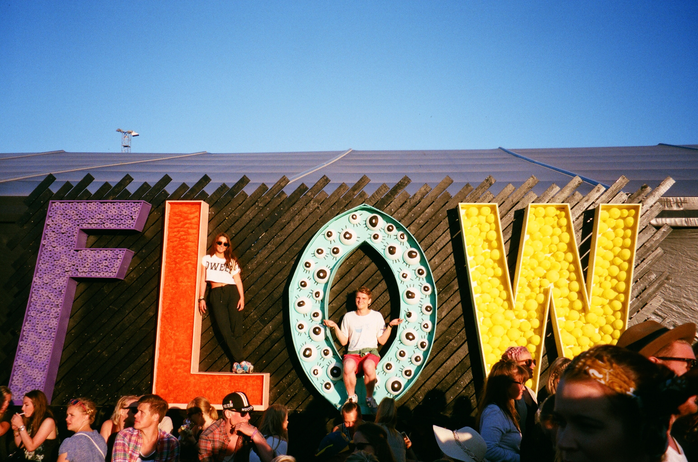

Home
Home
 Explore
Explore
 Notification
Notification
 Messages
Messages
 Profile
Profile
 More
More

What´s Happening?
48m
Thanks a lot! 😍
😍

48m
I will display 😜
1h
Hello Everyone
18m
Ha Ha Ha, look this!!
48m
Yet Another Guide to Build a JSON API with Phoenix 1.5 shared in the latest Elixir Digest.
https://www.youtube.com/watch?v=aQNypoBaUNk&t=2702s
@tamasos #myelixirstatus #elixirlang #phoenix.

Trends for you
#NoSeInundaMas
#NoSeInundaMas
#Francisco
#FormosaQuiereDecirHermosa
Who to follow

